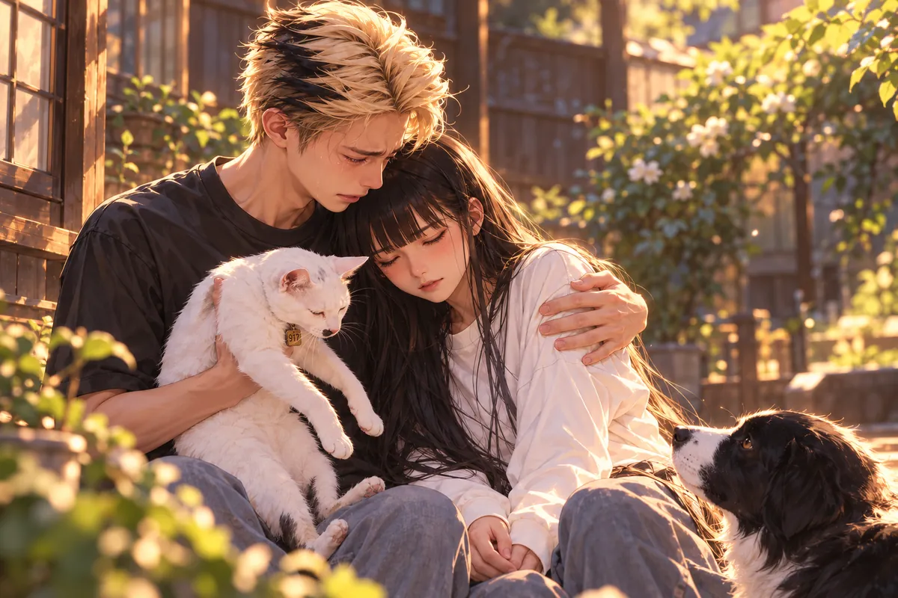
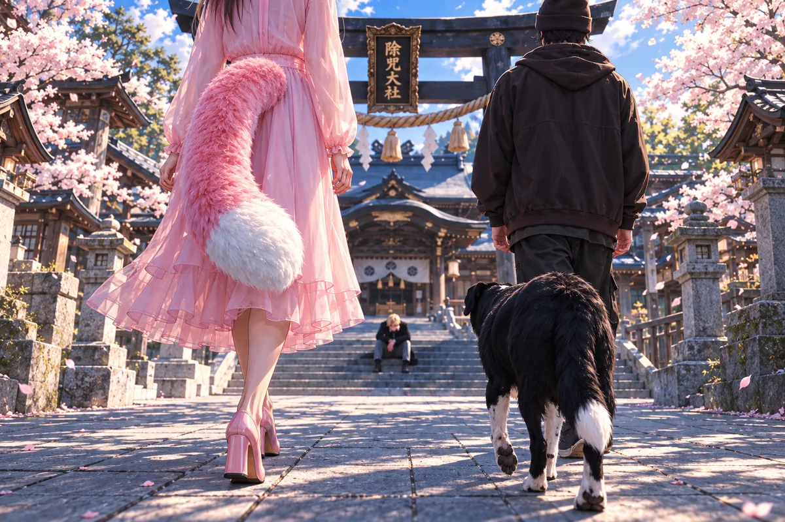
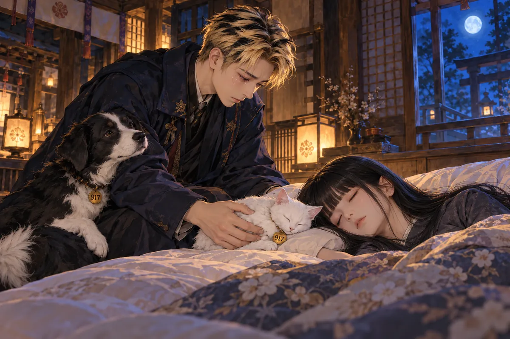

華佗不準芋頭進自己的湯。
「煮散了，湯就跟牛角怪拉稀一樣。」華佗說。
同桌的人都停了一下筷子。
他像沒察覺，又轉向利維坦：「你跑來這裡，王國怎麼辦？」
有鼠軍師。
「那桌上的老鼠是什麼？」
利維坦轉頭，盯著桌上的鼠軍師。
「你怎麼也在這裡？王國的防禦呢？」
「只准魔王放火，不准軍師點燈啊？」鼠軍師挺起胸膛，「我們兵強馬壯。撒旦被你打倒，第三王國正忙著內亂。南方戰線，安啦！」
利維坦拿起透明水杯，朝軍師露出一個笑。
「讓你見識人間的手搖珍珠奶茶。」
鼠軍師還沒來得及退，整隻就被塞進杯裡。
杯子比軍師的身子高，他在裡面動，原本理直氣壯的口氣一下變成要怎麼出去。利維坦看著，像這就足夠替只准魔王放火那句找回一點。
華佗還坐在旁，筷子沒有往芋頭那邊去。鍋裡的熱氣一層層上來，桌上的神與魔卻像一場誰都認得彼此毛病的普通聚餐。
軍師提南線，提第三王國已亂，話都有根據，不是隻為自己出來吃飯而臨時找的一套說辭。利維坦聽過，至少知道離開的這段時間，王國還由能把軍務講清的人守著。
只是守著的人如今也來了。觀音讓兩位英雄停一停，把鴨血放好，軍師終於有一件比與魔王爭執更值得伸手的東西，桌上的吵鬧才暫時收住。

鼠軍師一得寵，又去笑魔王只有狐姬的閉門羹。
華佗等他們鬧完，才開口借千里眼，也借令牌。
他沒在剛進門時就打斷吃飯，聽過他們的玩笑，也接過幾句。如今開口，語氣與嫌芋頭的時候不同，觀音便抬眼看。
千里眼能去查，令牌則讓要做的事不只是一位醫神私下的判斷。他既要借，就得把理由講到能讓眼前的人知道，接下來會影響哪些地方。
利維坦看他，鼠軍師也慢下來，手邊的鴨血不再是全部注意。桌上仍有沸起的聲音，華佗卻先放了筷。
小雨那股衰弱的靈氣，華佗越想越不安。治法還沒有找到，來店裡用餐的靈魂卻每天都在離開。他得先把危險告訴觀音，請她一起攔住這條可能讓詛咒擴散的路。
觀音問用途。
熱湯的蒸汽往上升。醫神放下筷子，先前的笑已退得乾淨。
三途川混入詛咒，需要阻止擴散。
他要查封黃泉燒肉店。
這句話落下，桌上沒有人立刻拿玩笑接。那間店大家都知道，阿志在那裡，語彤也在，小雨與大寶的日常更是從那扇門一遍遍進出。
華佗沒有因為熟悉就略過，也沒有將查封當成已經找到源頭的一份勝利。詛咒怎樣傳，仍有不明的地方，暫停只能讓接下來碰到的人少一些。
觀音望著他，沒有只因醫神認真便一句答應。她讓他說情況，讓每一項發現都落到可以判斷的地方。
熱湯仍在滾，鼠軍師卻沒再插話。華佗把目前的發現一一說清，觀音聽著，手邊的筷子始終沒有再動。
那間送人最後一餐、讓執念有出口的店，如今成了必須暫停的地方。觀音望著他，鼠軍師也不再接話。
桌上的鍋仍滾著。觀音放下筷子，讓華佗把發現的情況說清楚。
小雨把暫停營業的牌掛上去。
她反覆確認繩結，習慣要讓事情做得像平常一樣。語彤站在旁邊，問需不需要再擦一次桌子。老闆說不用，已經乾淨。
沒有客人來，店裡反而能聽見冰箱的聲音，聽見遠處列車的鳴笛。
小雨想起毛怪，想起想吃壽司的小樂，想起每一張木牌放上桌的響。她以為這裡會一直亮著，沒想到有一天，自己也必須從裡頭走出去，等別人來想辦法。
老闆收好鑰匙，讓他們先回家。
語彤伸手翻了翻停業牌，背面什麼也沒有。她想寫很快回來，筆卻沒有拿出來。
沒有誰能替很快保證。
於是她只把牌擺正，跟上乾爹。小雨走在後面，關門前回頭，看那一排被推好的椅子。
明天如果能開，仍要把碗筷擺齊。今天先回家，讓等她的人，不必等到飯涼。
燒肉店停業，小雨靠在大寶肩上，問要關多久。
大寶靠近些，讓她倚得舒服一點。
「就當放假吧。我們功德存了不少，過陣子帶大家去北境。」
小雨望向他。「這次真的要去？」
「先把事情處理好。」
這個延了又延的旅程，總算又能拿出來說。她笑了一下，仍靠著他的肩。
她叫咪咪，問爸爸最愛她們，是不是。
小雨靠著他，語氣裡還有方才說旅行的輕。店停了，她擔心，卻也願意先聽大寶說放假，把一再延後的北境重新想一次。
咪咪就在旁邊，熟悉的名字一叫，家裡便像仍照原來的方式運轉。大寶聽見最愛，沒有拿一句嘴硬回她，肩膀讓她靠得更穩。
功德有一些，想去的地方也還在，若事情能解決，他真願意帶她們好好走。從前旅行總被下一件差事延後，此刻說起，反而像能替關店這段不安留一個後來。
小雨笑著，咪咪也在。大寶看這兩個自己最愛的人，沒有想到下一次伸手，不是繼續接住一句玩笑，而是她們忽然失去力氣的重量。
下一刻，她的身體失去力氣。
大寶伸手，咪咪也倒下。兩個最熟悉的重量忽然不再回應，他想抱起一個，又怕另一個從手邊滑落。
「不要又讓我失去你們。」

他的聲音從屋裡衝出去。
大寶不知道喊誰。老闆、神明、醫生，所有原本有名字的人此刻都像隔著很遠，他只能先把幫忙喊出去，讓屋外有人聽見這裡已經不能再等。
小雨不答，咪咪也不答。他摸過臉、碰過身體，想照從前救人的辦法確認，手卻急得連先後都分不清。
在火場裡，出口在哪裡、傷者還能不能動，至少有一套做過很多次的動作。現在沒有煙，也沒有火，帶走她們的東西卻讓他找不到可以背起來往外跑的方向。
九尾與華佗到門前，黑糖先迎。狗聽見了，也認得這份不對，帶人進來的腳步很快。大寶抬頭看見醫神，才終於有一個能把求字真正放到面前的人。
大寶跪著，已分不清要先向誰求。
神也好，魔也好，幫幫她們。
從前他揹人出火場，從前有人對他喊救命。此刻，他只能把這些話一遍遍說，像只要聲音不中斷，眼前的人便還能抓住他。
華佗展開醫者令，鎮魂。
九尾握鳥居墜飾，結界開啟，把屋裡的人包住。
醫神說，在他面前，不讓詛咒帶走靈魂。
那是此刻必須做到的阻擋，還不是治癒。
大寶想問醒不醒得來，問還要多久，問是不是像從前那些病一樣，只要好好照顧就能再起身吃飯。每個問題都在喉間，華佗的術卻還得繼續，他怕一出聲便妨礙。
醫者令在，九尾的結界也在，至少眼前的靈魂沒有被立刻帶走。這個至少已是他們此刻能守住的東西，不能因為大寶還想更多，就假裝已經成為一個可以放心的答案。
他握著小雨的手，沒有敢用力，又怕太輕像沒抓好。咪咪在旁，身子小，讓他連多看一眼都想起從前留不住她的日子。
額頭碰地以後，他慢慢抬起，眼裡只有等。神也好魔也好，他不再問身份，能讓她們多留下這一刻的，便已經是自己需要用全部力氣去求的事。
大寶仍磕頭。額頭碰地的聲音很沉，九尾看了他一眼，沒有讓結界鬆開。大寶想抬頭問，又怕打斷華佗施術，只能握緊小雨的手，等著。
奈何橋封禁，說明會裡滿是抗議。
有人急著投胎，母親快生了；有人下輩子是富二代，覺得自己蒙受巨大損失。
聲音從席間一個接一個起，不同的人都認為自己的時間最不能被耽誤。有的是真的等著出生的安排，有的已把下輩子的好處算得清楚，眼前封禁一來，便像誰將原先屬於自己的東西扣住。
華佗站在臺上，不能逐一把這些急都變成可以離開的例外。傳染方式未明，若放出一個，便不只是這個人自己願不願意承擔。
「不只是你們自己。」華佗朝臺下說，「家人也可能消亡。」
席間仍有人問：「所以不能出城？」
「現在有風險。」
「我們都安排好了！」
華佗停了一下，等那些交疊的聲音落下。
「我知道你們有想去的地方。但先把我剛才那句聽完。」
有人仍搖頭，有人轉向身邊的人。華佗把手放穩，沒有因為臺下不願聽，就把家人的風險略過。
語彤坐著，看醫神重複。她知道有人要趕上出生，也知道一項還沒找到解法的詛咒，不會因為誰講得更大聲就自動留下門內。
華佗攔住眾人的疑問。
「傳染的方式還不明，現在不能讓靈魂離開。」
「連投胎也不行？」
「若把咒一起帶去，原本可以好好過的一生，可能連全家都被拖進去。」
他說完，屋裡安靜了一陣。
西裝男子繼續怪除咒協會。語彤終於忍不住，站了起來。
「先生，你是在靠北什麼？」她指著臺上的華佗，「沒看到他已經在想辦法了嗎？」
九尾說，是月老親傳。
華佗明白了，也謝謝她，接回解釋。
天煞孤星無色無味，多數除咒師得看掌紋才知。他能目視察覺，卻仍沒找到治法。咒像暗中存火藥的煙火，遇火便爆，而愛，就是那一點火星。
目前，結界可以抑制增長。
這是華佗現在能確認的部分。他沒有把抑制說成清除，也沒因為需要大家配合，就先給一個聽來比較好接受的治癒期限。
語彤聽著，先前替醫神出聲的火慢慢收下，留下更深的擔心。愛是火星，這句話讓她想到許多人，想到乾爹平時看白妹，想到大寶在家裡喊小雨與咪咪，連普通的關心都不能再只當成好事理解。
華佗接著點名，手邊的安排有順序。誰需要隔離，誰先進入結界，都得讓人聽清，不是說完危險便由大家各自猜自己有沒有。
她先轉頭看座席。這裡的人與動物，都有自己平日見過的臉。等醫神開始點名，她才知道有哪些朋友得進結界。
接著點名隔離。
黑糖。李國志。接下來那個名字，被席間的騷動蓋過。
老闆讓語彤別擔心。她望著乾爹，手已握緊。
最後，狐姬。
九尾猛地站起，問弄錯了吧。
華佗看她，聲音很低。
「我也希望我錯了。」
華佗沒有移開目光。九尾希望是弄錯，他也希望，可醫者看見了，便不能為了讓眼前一對姐妹安心，將該隔離的人從名單裡劃去。
九尾仍站著，剛才還能用威脅與罵人擋住不舒服的嘴，此刻卻沒能再接一句。若對方打得贏，她可以打；若妹妹被纏，她可以站出來。眼前這份無色無味的咒，卻不給她一個能踹開的身子。
狐姬看手，手沒有變色，也沒有哪一道傷讓人能一眼知道被碰過。平常用來整理卷宗、拿筷子、收信的動作，仍是她自己的，危險卻已經被叫到了名字上。
語彤望著乾爹，沒有再用一句我不擔心回應。她的手握緊，房裡那些先前吵著要走的人也慢慢靜下，終於知道臺上講的不是隻存在於古神故事裡的一種悲劇。
說明會忽然靜了。九尾還站著，嘴唇動了動，卻沒有再問。狐姬低頭看了一眼自己的手。
咪咪醒來，先找爸爸。
小雨在旁邊睡著。她看了一會兒，沒有把媽媽叫醒，自己慢慢起身。
咪咪先聽呼吸，鼻尖靠近熟悉的氣味。媽媽還在，爸爸卻不在枕邊，房裡的安靜也與平日午睡不同。
她動了一下，身子比原先沉，不想讓媽媽被自己碰醒，便先將腳放穩，再慢慢往外。貓習慣把不舒服收得很小，走不動時也不一定立刻叫人看。
外面有人說話，她認得一些聲音，卻沒有在門邊馬上發問。爸爸若在，她想先找到爸爸，把已經在心裡留下的那些話說清。
從前沒來得及的一次，她記得。如今仍能起身，仍能叫他，便不想只等別人看出自己需要什麼。媽媽先睡，她可以輕一點出去，再輕一點回來。
神社前，狐姬叫住華佗。

「怎麼連他也染上了？」
華佗望向大寶。
「不只情愛。關愛、敬愛，也會讓詛咒延伸。」
狐姬跟著看過去。大寶心裡有那麼多人，她這才明白，那些在乎為什麼會讓他如此害怕。
醫神讓大家先往西偏殿，與業鏡羅漢夫妻會合，留大寶靜一靜。
安置傷者的結界也在神社裡。大寶坐在殿外，黑糖仍陪著他。
他正抱著黑糖。
「對不起。害你也……」
狗沒有離開。頸上的九一七號牌，碰在他袖子上，響得很輕。
咪咪變成人形，走到他身後。大寶回頭，先急她為什麼浪費靈力。
她說有些話，用這樣比較合適。
「我怕又沒說出口，就忽然跟你分開。」
大寶不再攔。
她趴上他的背，很輕，卻讓他整個肩膀沉下去。從前一隻不肯多吃飯的貓，沒來得及把想念說完；如今，她努力讓每句話都被爸爸聽清。
大寶沒有馬上轉身把她抱下來。他怕耗靈力，剛才急過，此刻卻知道咪咪是真的有話要用人形說，若再攔，她又得將最想講的留到後來。
女孩的手靠著，他能聽見聲音就在耳邊。她說愛爸爸，也愛媽媽，沒有像人類那樣先鋪一段很長的解釋，越直接，他越難將眼淚壓回去。
咪咪不太會表達，可每一次靠近、每一次留在家裡，都不是不知道愛。她將這件事說出來，像怕爸爸又把自己曾經的安靜，誤讀成不在乎。
大寶低著頭聽，沒有催她講快，也沒有在每句後都用別說這種話堵回去。病讓他害怕，愛也是；可這一刻若因為怕便不肯聽，眼前這隻努力說清的貓，就又得獨自收好沒能說完的想念。
「這次生病，能不能不要戴羞羞圈？那個好不舒服。」
大寶的眼淚落下來。他點頭，說不戴，以後都不戴那個爛圈。
這是一個他能答應的要求。他答得很快，快得像終於在漫長的無能為力裡，抓住一件可以替她做的事。
羞羞圈不大，以前生病時戴過，或許在旁人看只是一個該配合的照顧辦法。到了咪咪口裡，那份不舒服卻很具體，她怕的事情也終於有了一件能拿來請求的名字。
大寶答完，沒有將它接成不戴就一定會好。她要的很小，他便先將能給的給，剩下還不能做到的，不用在此刻一起壓回她身上。
咪咪累了，聲音慢下來。他聽見想睡媽媽旁邊，便記住哪一側該留位置；聽見公園，又看黑糖頸上的牌，兩個九一七挨近，輕輕碰了一下。
等好了再去，是她仍想要的後來。大寶沒有替她訂一個日期，只小心將變回貓的身子抱好。走到枕邊時，他放得很慢，怕那份本來就很輕的呼吸，在自己的手下又多受一點驚。
咪咪累了。
她想睡在媽媽頭旁，靠近一點。又轉向黑糖，說發現兩人的號碼都是九一七，等好了，要一起去公園。
大寶小心抱起變回白貓的她，放到小雨枕邊。她蜷好，鼻尖貼近熟悉的氣味，沒有再說話。
他看著她們。
小雨曾走過，咪咪曾走過。他也曾在火裡走到人間的盡頭，才有如今這間能一起吃飯、一起睡覺的家。
他望向結界裡的兩個身影。小雨仍沒醒，咪咪的呼吸很輕。他想伸手摸她，又怕把她吵醒。
他把臉埋進黑糖的毛裡，手臂沒有鬆。
「黑糖……」
聲音碎了。
「我怎麼辦……」
白貓仍靠著媽媽。黑糖往他懷裡縮了一點，沒有掙開。
